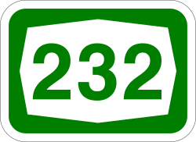

סיור דיגיטלי בציר
סיור דיגיטלי זה פותח על מנת להנציח את אירועי ה7 באוקטובר שהתרחשו על ציר 232 (ציר הדמים),
כיום אין סממנים מובהקים בכביש לזוועות.
מוזמנים במהלך הנסיעה על ציר זה ללמוד אודות סיפורו.
לומדה זו מכילה תכנים קשים
(תמונות ועדויות מהשבעה באוקטובר)
חניון רעים (פסטיבל הנובה)
הדיווחים הראשונים על ירי באזור החלו להתקבל קצת לפני שבע בבוקר, מהחניון ברעים יש רק כביש אחד שמוביל החוצה, כביש 232.
עוד לפני שהמחבלים הגיעו לחניון נוצר פקק ביציאה, ולאנשים שעמדו בו לא היה מושג שהמכוניות הראשונות כבר הספיקו להפגע. המחבלים ירו במכוניות וטבחו בנוסעיהן לאורך כל הכביש ויצרו מחסום שמנע את יציאת המבלים מהאזור.
רבים מקורבנות המסיבה סיימו את חייהם בכביש זה, חלק נחטפו משם.
עדות מכביש 232
עיקול מפלסים
בסמוך לגדרות הקיבוץ ליד עיקול הכביש המכונה 'עיקול מפלסים' העמידו המחבלים מארב מתוכנן עם רכבים שחסמו את הציר וירו במקלעים על הרכבים שעברו בכביש שכללו בעיקר מבלים שברחו ממסיבת הנובה.
על פי עדויות של ניצולים שהתפרסמו בתחקירים שונים, המחבלים ירו, עשו וידואי הריגה, אנסו ושרפו.
בעיקול נרצחו כ-50 אזרחים ישראלים, חלקם נחטפו לרצועת עזה.
מיגוניות
"מיגוניות המוות" הוא כינוי למיגוניות בצומת רעים, בצומת עלומים ובצומת בארי, בהן נרצחו ומהן נחטפו עשרות צעירים שברחו מהטבח בפסטיבל הנובה.
עם הגעת המחבלים לזירה, כ-30 מהמבלים בפסטיבל ברחו למיגונית בצומת רעים בה מצאו מחסה.
מתוך 27 ששהו במיגונית, 16 נרצחו, 4 נחטפו, ורק 7 שרדו בחיים.
מגרש הרכבים השרופים
מגרש הרכבים השרופים בתקומה מאחסן בתוכו 1,560 כלי רכב שפונו מכבישי ומיישובי עוטף עזה בשבועות שלאחר השבעה באוקטובר.
הרכבים עברו תהליך שכלל סילוק אמצעי חבלה כגון מטענים, רימונים וכלי לחימה נוספים שעלולים לפגוע בכוחות המטפלים ברכבים, איסוף שיירי הנרצחים כדי להביאם לקבורה, איסוף חפצים אישיים ומזהים של יושבי הרכבים, איסוף מצלמות ומידע מודיעיני מהרכבים במטרה להבין מה עלה בגורלם וכו'.
מאחורי כל כלי רכב ישנו סיפור על משפחות, ילדים, הורים, מבוגרים וצעירים, שהיו במסיבה או בשטחי העוטף.